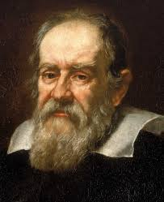

Galileo Galilei
Colui che fu condannato dalla chiesa

Biografia
Galileo Galilei nasce a Pisa il 15 febbraio del 1564, dal fiorentino Vincenzo Galilei e da Giulia degli Ammannati. Nel 1574 la famiglia lascia Pisa e si trasferisce a Firenze. Nel 1581, Galileo si immatricola all'Università di Pisa per studiare medicina, seguendo il desiderio del padre.
Durante gli studi, si appassiona alla fisica e nel 1583 formula la teoria dell'isocronismo del pendolo, intuito osservando le oscillazioni di una lampada nella Cattedrale di Pisa.
Nel 1585 ritorna a Firenze senza aver completato gli studi, e comincia a dedicarsi alla fisica e alla matematica, dando anche lezioni private Nel 1588 ottiene una cattedra di matematica all'Università di Pisa, che mantiene fino al 1592.
Nel 1592, Galileo ottiene una cattedra di matematica (geometria e astronomia) all'Università di Padova, dove rimarrà fino al 1610. E' in questo periodo che comincia ad orientarsi verso la teoria copernicana del moto planetario.
Nel 1602 conduce alcuni esperimenti sul pendolo, durante uno studio sul moto accelerato. Negli anni successivi si dedica a studi di idrostatica e sulla resistenza dei materiali.
Nel 1609, mentre Keplero pubblica la sua "Nuova astronomia", che contiene le prime due leggi del moto planetario, Galileo comincia ad interessarsi ad un nuovo strumento, costruito in Olanda: il telescopio. Fino a quel momento le osservazioni astronomiche erano state compiute ad occhio nudo.
Dopo avergli apportato dei miglioramenti, ne presenta al Senato di Venezia un esemplare, al quale da' il nome di "perspicillum".
A Padova, con il nuovo strumento, Galileo compie una serie di osservazioni della Luna nel dicembre 1609, e il 7 gennaio 1610 osserva delle "piccole stelle" luminose vicine a Giove. Nel marzo 1610, rivela nel "Sidereus Nuncius" che si tratta di 4 satelliti di Giove, che poi battezza Astri Medicei in onore di Cosimo II de' Medici, Gran Duca di Toscana. Soltanto in seguito, su suggerimento di Keplero, i satelliti predneranno i nomi con i quali sono conosciuti oggi: Europa, Io, Ganimede e Callisto.
La scoperta di un centro del moto che non fosse la Terra comincia a minare alla base la teoria tolemaica del cosmo.
Negli anni successivi, si accende una disputa intorno alle sue scoperte; l'interpretazione che ne da' lo scienziato confuta la teoria tolemaica del moto, adottata ufficalmente nel mondo scientifico e religioso dell'epoca, e conferma invece la teoria copernicana. L'inquisizione bolla come eretica questa teoria e proibisce formalmente a Galileo di appoggiarla. Il testo "De Revolutionibus Orbium Coelestium" di Copernico viene messo all'indice. Nell'aprile del 1630, Galileo termina di scrivere il "Dialogo sui due massimi sistemi del mondo", nel quale le teorie copernicana e tolemaica vengono messe a confronto; in seguito concorda con il Vaticano alcune modifiche per poter far stampare l'opera, ma decide poi di farla stampare a Firenze, nel 1632. Papa Urbano VIII, esaminato il "Dialogo", ne proibisce la distribuzione e fa istituire dall'Inquisizione un processo contro Galileo.
Lo scienziato, già anziano e malato, viene chiamato a Roma nel 1633, dove viene processato e gli viene richiesto di abbandonare la teoria copernicana. Imprigionato e minacciato di tortura, Galileo viene costretto ad abiurare pubblicamente e viene condannato alla prigione a vita, ma poi gli viene concesso di scontare la pena nella sua villa di Arcetri, vicino a Firenze.
Nel luglio dello stesso anno, comincia a scrivere il "Discorso intorno a due nuove scienze attinenti alla meccanica e ai movimenti locali".
Muore, malato e ormai cieco, l'8 gennaio 1642, nella casa di Arcetri.
Scoperte Scientifiche e Libri Scritti
Galileo Galilei studiò diverse discipline ma si distinse soprattutto per le scoperte in ambito astronomico e in ambito fisico, le sue scoperte si devono anche agli strumenti da lui inventati, il più famoso è il telescopio.
Passiamo ora alle scoperte:
- Le scoperte astronomiche
- I satelliti di Giove
- Macchie Solari
- L’isocronismo del pendolo
- Il peso specifico
- Il peso dell’aria
- Il principio d’inerzia
- il moto di un proiettile e la caduta di un grave
Home